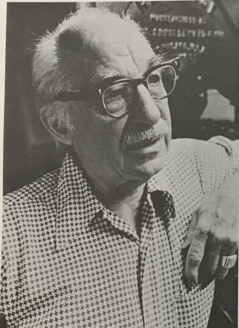

Like Morris Benton before him, Middleton*
was a modest man who spent his working life designing for
one manufacturer, in his case the Ludlow Typograph
Company of Chicago; he was also their design
director, and made largely on his own the decisions
that were needed about what faces to cut to keep up
with a market which was hungry for type. Middleton
and Ludlow mostly kept to the paths trodden by other
manufacturers, but the faces they produced were
of very high quality.
The Ludlow machine cast solid line slugs, but it
worked from hand set brass matrices, and was used
almost exclusively for advertising display work and
newspaper headlines. One particular characteristic
was that it sometimes used matrices slanted at an
angle of seventeen degrees from the vertical, so that
its italics gave the appearance of being kerned without
in fact being so.
Middleton was born near Glasgow in Scotland on
6 May 1898, and emigrated to the United States at
the age of ten, when his father went to manage a coal
mine in Alabama. A few years later the family moved
to Illinois, and Middleton went to the Chicago Art
Institute with the intention of becoming a painter.
However, he soon came under the sway of Ernst
F. Detterer, a teacher greatly influenced by the
European private press movement, who had studied
briefly with Edward Johnston, and now set up a new
curriculum at the Institute devoted to the printing
arts. Detterer had been commissioned by the Ludlow
Company, then only seventeen years old, to design a
type using the same Jenson model at the other
foundries had followed, with such faces as Benton's
Cloister for ATF, after the example set by the private
presses. Although Detterer took as his model the
same book, Jenson's *Eusebius*, as Rogers had used for
Robert Hunter Middleton, the man and his letters, eight essays
on his life and career, edited by Bruce Beck, Chicago,
Caxton Club, 1985.
118
Facing page: Robert Hunter
Middleton (1898-1985).
Photography by courtesy of the
Caxton Club, Chicago.
Right: Eusebius (1924), the
roman designed by Ernst Detterer
with Middletion, the italic and
semi-bold by Middleton;
Delphian Open Title (1928).
Below: Record Gothic
(1927-61), and Tempo (1930).
Centaur, and employed the same engraver, Robert
Wiebking, his face, called Eusebius (1924) was far
closer to the older Cloister. The young Middleton
collaborated on the roman, designed the italic on his
own, and so impressed Detterer with his abilities that
the latter recommended him for a job with Ludlow.
He began there in 1923, became director of type
design in 1933, and retired in 1971; during that time
he produced nearly a hundred faces.
The Ludlow machine was relatively cheap, and
easy to operate, and was widely used, especially after
its faces became known for their quality, in small
shops which could not afford a Linotype. Huge
numbers of matrices were needed, and Middleton
was greatly helped to begin with by Robert Wiebking,
who not only made punches and matrices but had
designed his own pantographic machine for doing so,
and taught him much about the technical requirements
of matrices for practical everyday types.
The types Middleton produced were for the most
part handsome workhorse faces which followed
current fashion: Ludlow Black (1924) was modelled
on Oswald Cooper’s Black (1921) for Barnhart
Brothers&Spindler, and Cameo (1927) was an inline
roman like Tiemann’s Narziss for Klingspor (1921).
ABCDEFGHIJ
abcdefghijklmno
ABCDEFGHIJK
abcdefghijklmnopqr
ABCDEFGHIJKJ
abcdefghijklmn
RHM
ABCDEFGHIJKLMNOPQRSTUVWXYZ&
abcdefghijklmnopqrstuvwxyz
1234567890$
ABCDEFGHIJKLMNOPQRSTUVWXY
abcdefghijklmnopqrstuvwxyz
1234567890
ABCDEFGHIJKLMNOPQRSTUVWXYZ
abcdefghijklmnopqrstuvwxyz